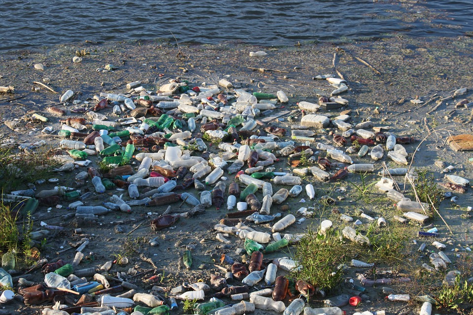

GREAT JOB! You can reduce the amount of papertowls you use by using and reusing rags.

Paper towels are wasteful and nonresuable.
It is best to reduce the amount of paper towels we use since they nonrecyclable, non-biodegardable, or harmful for the environment.
Reusable towels is an investment in more than one way as you do not have to throw them out after one usage.
They are also made of durable materials, so they are guaranteed to last you a longer period of time.
Old clothing can also be used as "towel" rags and can be used for cleaning, etc. if you are on a budget!